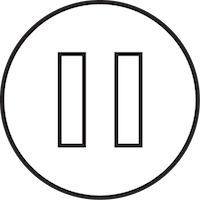
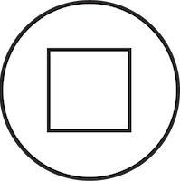

Ecostem
Loading Ecostem.
.
Loading elevation data.
.
Loading elevation data...
Name:
Publish
Cancel
Editing {{activeTransferFunction.title}}
Done Editing
Editing {{editedLayer.name}}
Done Editing
Choose a brush:
Choose a value:
Map Layers
{{ layer.name }}
{{ layer.name }}
Add Sensor
Click in the scenario box to add a sensor at that point.
Cancel
Models
{{ layer.name }}
Paint
Unpublish
Publish
Show Raw Elevation
Hide Raw Elevation
Show Quad
Hide Quad
Show Slopes
Hide Slopes
Transfer Functions
{{ tf.title }}
{{map.animator.hours | timeformat}} : {{map.animator.minutes | timeformat}}
 